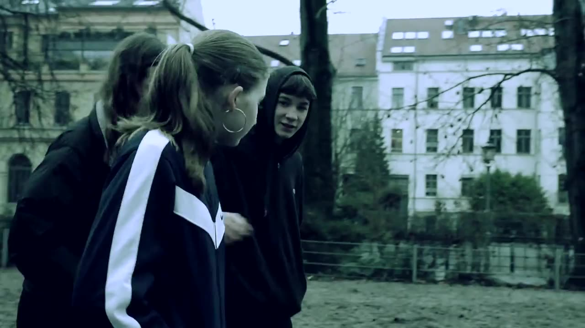
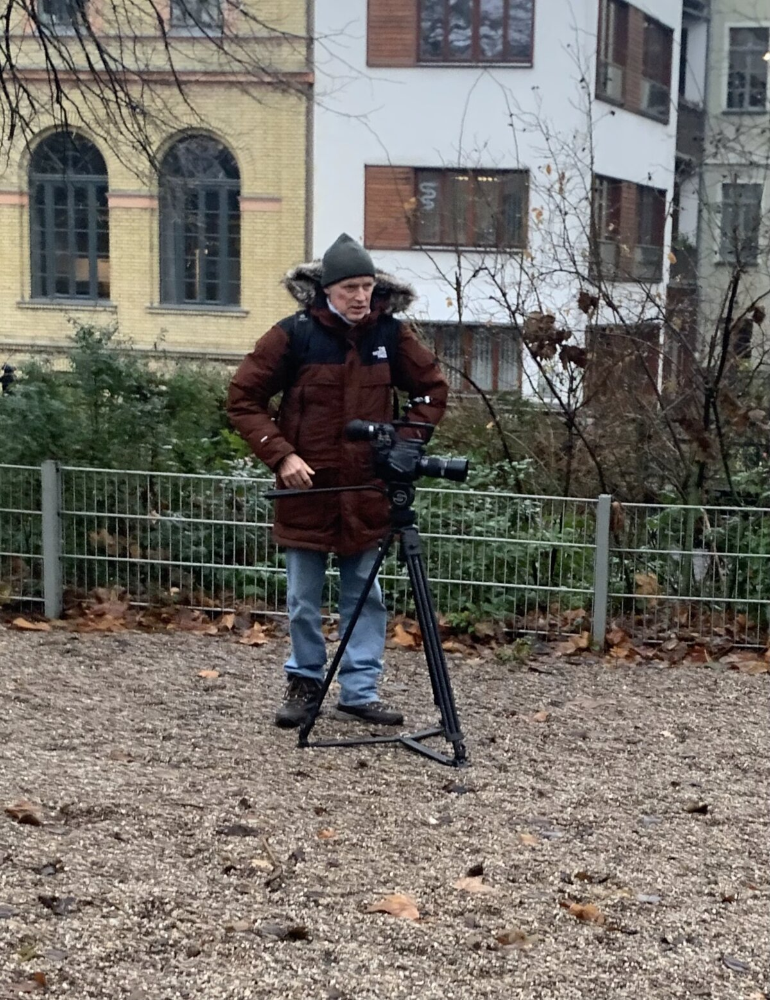
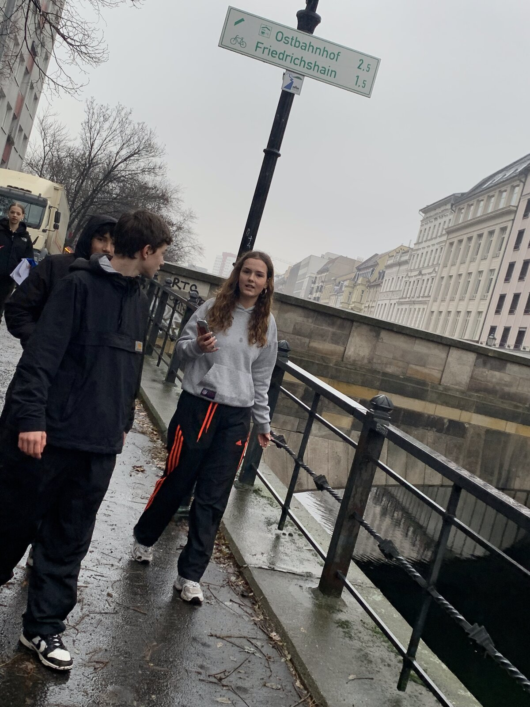
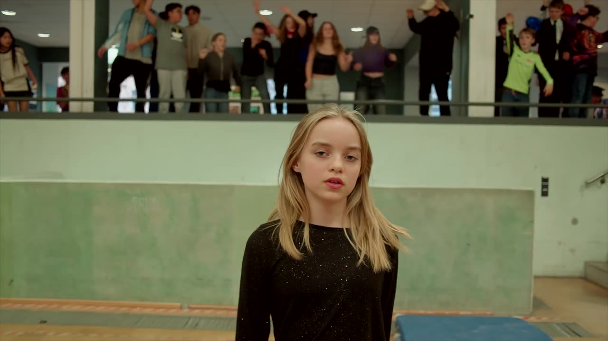
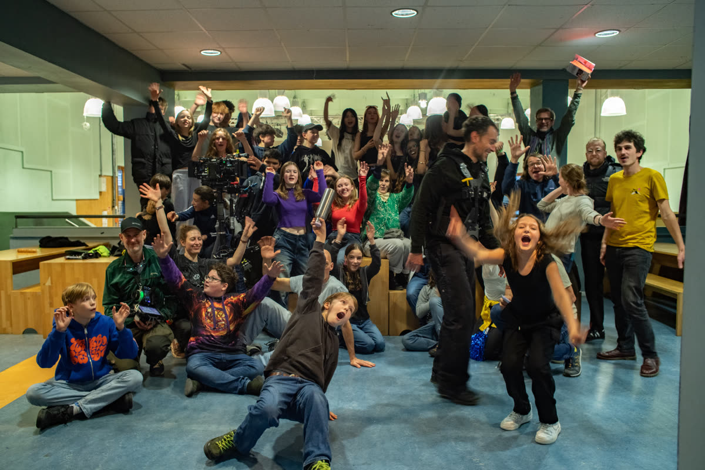

Making-of
WinterfilmAkademie — wie unsere Filme mit Jugendlichen entstehenWinterfilmAkademie — how our films with teenagers come to life
Eine Woche, ein echtes Set, dreißig Jugendliche — und am Ende ein Film, der wirklich rauskommt. Hier die Geschichte der beiden bisherigen Akademien. One week, a real set, thirty teenagers — and in the end a film that gets released. Here is the story of the two academies so far.
2023
Wir drehen „Sonne und Beton"Shooting "Sonne und Beton"

„Ein gutes Drehbuch ist alles. Und ich wollte eins verfilmen — ein richtig gutes." Also haben wir Szenen aus „Sonne und Beton" neu gedreht. Schon beim Lesen der ersten Szene entstand der Film in unseren Köpfen: Wer besorgt was? Wer spielt welche Rolle? "A good script is everything. And I wanted to film one — a really good one." So we re-shot scenes from "Sonne und Beton". Reading the first scene, the film already formed in our heads: who gets what? Who plays which part?
Der Dreh war anstrengend — Regen, Kälte — und trotzdem blieben alle motiviert. Unfassbar schön, wenn jede:r in seine Kraft kommt und daraus so viel entsteht, ohne dass es nach Mühe aussieht. The shoot was tough — rain, cold — and still everyone stayed motivated. It's incredibly beautiful when everyone comes into their own power and so much emerges without it ever looking like effort.


2024/25
„Polyester" — vom Schulflur zur echten Veröffentlichung"Polyester" — from school corridor to real release

▶Die Schule wollte eigentlich einen Schulfilm. Wir haben gesagt: Lass uns gucken, welcher Künstler gerade ein Musikvideo braucht — und was Echtes draus machen. Maximilian Hecker stand mit „Polyester (Remix 2025)" vor einer Veröffentlichung. The school actually wanted a school film. We said: let's find an artist who needs a music video right now — and make it real. Maximilian Hecker was about to release "Polyester (Remix 2025)".
Mir war wichtig, dass jede:r seinen Platz findet. Film bietet unzählige Möglichkeiten — vor und hinter der Kamera: Organisation, Technik, Kostüm, Ausstattung, digitale Berufe. Oft sehen andere klarer, worin jemand gut ist, als man selbst. Und die Leiseren trauen sich selten in die Führung, obwohl sie genau verstehen, was das Team braucht. It mattered to me that everyone finds their place. Film offers countless possibilities — in front of and behind the camera: organisation, tech, costume, set design, digital crafts. Often others see more clearly what someone is good at than they do themselves. And the quiet ones rarely dare to lead, although they understand exactly what the team needs.

Eine Woche Proben, Vertrauensworkshops, Choreografie — dann der One-Shot. Am schönsten ist, zu sehen, wie alle zusammenwachsen. Klar gibt es Konflikte, aber genau das macht es spannend: Krisen gemeinsam meistern und als Team stärker werden. A week of rehearsals, trust workshops, choreography — then the one-shot. The most beautiful part is watching everyone grow together. Of course there are conflicts, but that's exactly what makes it exciting: mastering crises together and growing stronger as a team.
„Jede:r hat etwas Besonderes zu geben — wenn der Ort stimmt und man sich sicher fühlt, es zu zeigen." "Everyone has something special to give — when the place is right and you feel safe enough to show it."
Der nächste Schritt: ein Spielfilm mit Jugendlichen. Dafür suchen wir Partner aus Bildung, Jugendhilfe und Förderung. The next step: a feature film with teenagers. We are looking for partners in education, youth welfare and funding.
Partner werdenBecome a partner